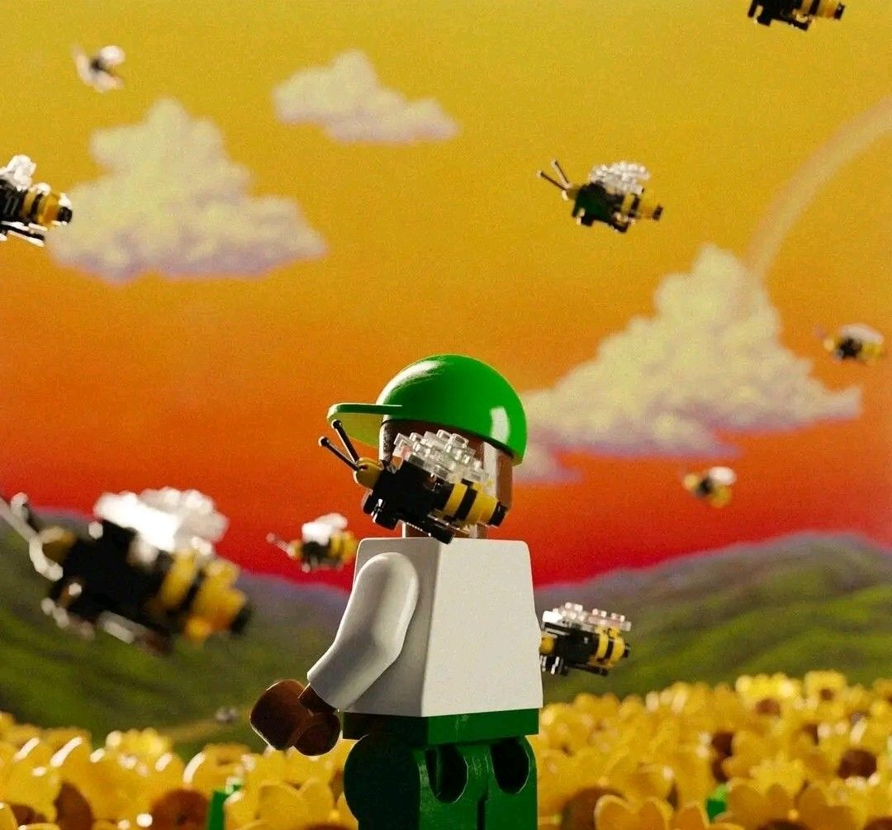

01Sedang dikembangkan
Website Portofolio
Website ini adalah tempat saya memperkenalkan diri, merangkum proyek, dan terus melatih dasar pengembangan web.
Sedang belajar dan membangun
Saya sedang menapaki perjalanan menjadi software engineer, dimulai dari HTML, CSS, dan Python. Saya suka belajar dengan membuat proyek nyata dan memperbaikinya sedikit demi sedikit.

Dari proses belajar
Saya membangun proyek untuk mengubah hal yang dipelajari menjadi sesuatu yang bisa digunakan dan ditunjukkan.
Website ini adalah tempat saya memperkenalkan diri, merangkum proyek, dan terus melatih dasar pengembangan web.
Saya juga sedang mengerjakan proyek kecil berbasis data. Detail dan hasilnya akan saya tambahkan setelah proyek ini lebih siap untuk dibagikan.
Mari terhubung
Kirim email ke aimanmunady70@gmail.com dan saya akan senang mendengar dari Anda.
Hubungi lewat email